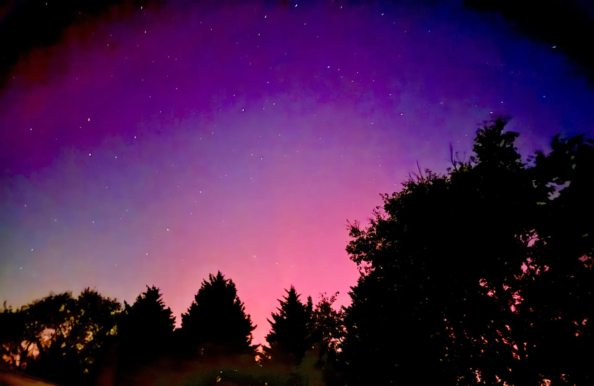

October 2024

Welcome
Hello and welcome to our first issue of Mary Elizabeth Baptist Church’s (MEBC) newsletter. We are excited about this opportunity to promote communication and involvement within our church family & community. Our goals for this newsletter are to bring awareness of our ministries and missions, create a feeling of community among members, and bring joy and connection to all of our readers. We hope this regular publication brings a breath of fresh air to your mailbox or inbox, as well as the content to keep you informed about our church and in touch with the Spirit. Newsletters will feature interviews, guest authors, event calendars, and “Food for the Soul,” a section devoted to bringing inspiration and a smile.
Food for the Soul
Pumpkin Dip Recipe
Description
A creamy, delicious dip that includes all the tastes of fall.
Ingredients
- 16 oz cream cheese (softened)
- 1 can pumpkin puree
- 1 lb powdered sugar
- 1 tsp cinnamon
- 1/2 tsp nutmeg
Directions
- Mix all ingredients with a mixer until well combined.
- Place in refrigerator to cool.
- Serve with ginger snaps (to dip).
Wisdom Center
“Finally, brothers and sisters, rejoice! Strive for full restoration, encourage one another, be of one mind, live in peace. And the God of love and peace will be with you.”
2 Corinthians 13:11
Cozy Community Celebration
The evenings are getting cooler, the days are getting shorter, and the leaves are changing—it’s fall! What better way to celebrate this cozy season than with our annual Fall Festival, brimming with warmth and nostalgia? This event offers a chance to fellowship with our church family and welcome our entire community to enjoy the season together.
Many of us have cherished this festival for years. Some remember attending as children and are now bringing their own kids; others who once brought their children are now enjoying it with grandchildren. Some may be joining for the first time, already planning to return next year. The Fall Festival is a place of fun that embraces all the wonderful aspects of autumn.
Picture the cozy warmth of huddling together on a hayride, the thrill of playing games and hoping to win a prize, and the joy of seeing young and old sharing smiles and hugs. Personally, I can’t wait for the good old-fashioned cakewalk! Few earthly pleasures compare to hearing your number called when the music stops, then selecting a sweet treat from the table laden with goodies made by our talented bakers. My stomach’s already growling!
Our church treasures our children and families, and these events highlight that appreciation while extending it to our community. Please invite friends, family, classmates, coworkers, or even that family you often pass in the grocery store. This event is truly for everyone!
The Fall Festival will be held on October 26th from 4:30–8:30 PM, primarily in the fellowship hall. We’ll have a prize for the best-decorated pumpkin, which can be either carved or painted. Please bring your crafted pumpkin to the festival, where it will be judged, and the winner announced that night.
As mentioned, there will be a cakewalk. If you’re planning to contribute a dessert, please bring it to Alicia Horne in the fellowship hall between 4–7 PM on Friday, October 25th.
MEBC Highlights
Workday
Thank you to all who came out to help with our church workday! Caring for the beauty of our church is a reflection of the care we have for one another, and our drive to reach our community.
Deaf Ministry
Deaf Sunday school and deaf church will begin on October 20th. Sunday school will be held at 9:45 AM and service at 10:45 with Rev Nathan C. These will be held in the fellowship hall.
Trunk or Treat
On October 31st, MEBC is hosting a Trunk or Treat event in the upper parking lot (outside the Sanctuary). Those planning to host from their “trunk” should arrive and park by 6:00 PM. Trick-or-treating begins at 6:30 PM, with the lot closing to cars at 6:25 PM. The lower lot will remain open for event attendees.
Providing a safe, family-friendly alternative for our community’s children is important to us. We encourage you to invite all children to attend. Last year, we saw fantastic costumes, fun games, and creative trunks—we’re excited to see what this year brings! This event allows families to experience our welcoming community and may inspire them to consider attending our church. Remember, sharing God’s love and His ministry is the true purpose behind everything we do.
Fundraising for Shoeboxes
with Magan L
On October 20th, the children’s ministry will host a donation-based spaghetti supper. During this special event, children will help prepare and serve spaghetti, refreshments, and dessert to raise funds for a mission project. The delicious food and sweet service by little hands make this evening a treat for all ages. All donations received will go toward filling and sending “shoeboxes” to those in need.
Our wonderful church members have donated many items over the past several months. Monetary donations will cover additional items and transportation costs for the boxes. The children’s ministry will send these shoeboxes to children in western North Carolina affected by Hurricane Helene. They’re calling it “Operation Carolina Christmas.”
“The kids really look forward to this every year”
Magan L, a leader in the children’s ministry and event organizer, says, “Our goal is for the children receiving these shoeboxes to know there’s everlasting love through Jesus Christ, and that children and people right here in the state love them.” The ministry leaders also hope MEBC children will learn they can share God’s love in many places, whether across the world or right here in North Carolina.
Last year’s event raised about $1,000, so this mission is expected to have a significant impact. “The kids really look forward to this every year,” says Magan, and it’s safe to say we all do.
The event will begin at 5:30 pm in the MEBC fellowship hall; donations are appreciated. Items for shoeboxes will be collected until the end of October. If you can’t attend but would like to make a monetary donation, please contact Magan L.
Are You Up to the Challenge?
Every successful organization needs a good understanding of where it is financially and motivationally. Our church has elected to take on the 20/20/20 challenge to focus on meeting budgetary needs and focusing on current and potential ministries we can offer. The basics are on the Sunday closest to the 20th of each month, each member is encouraged to give an additional 20 dollars to their typical giving. That week we are to spend an extra 20 minutes (either all at once or spread throughout the week) praying and listening to God about the ministries of MEBC, and praying for our leadership, vision, and mission.
Historically, MEBC has excelled in meeting budgetary needs for day-to-day operations while having funds for stewardship to its members and community. Since COVID, these funds have become tighter. While our church is still able to provide for those in need and does so often, it is important to consider the degree of impact we can have when more than sufficient funds are available. A few benefits highlighted by Pastor Dennis Burton in response to this challenge include bolstering the operating budget, providing more funds for mission projects in the community, providing more funds for current ministries (children’s ministries, activities for families, ministry to home-bound), and provides a solid base from which these ministries can operate. With 20 minutes dedicated to prayer and thoughts focused on the needs of our church and its ministries, the hope is that we will become acutely aware of how we can each play our part in continuing the legacy of a caring, willing, and involved church.
Upcoming Events
- Ladies Supper & Devotional - October 18, 6:00 PM
- Baptismal Service - October 20, 11:00 AM
- Deaf Church - October 20, 9:45 & 10:45 AM
- Spaghetti Supper - October 20, 5:30 PM
- Fall Festival - October 26, 4:30 PM
- Men’s Breakfast - October 27, 8:00 AM
- Trunk or Treat - October 31, 6:30 PM